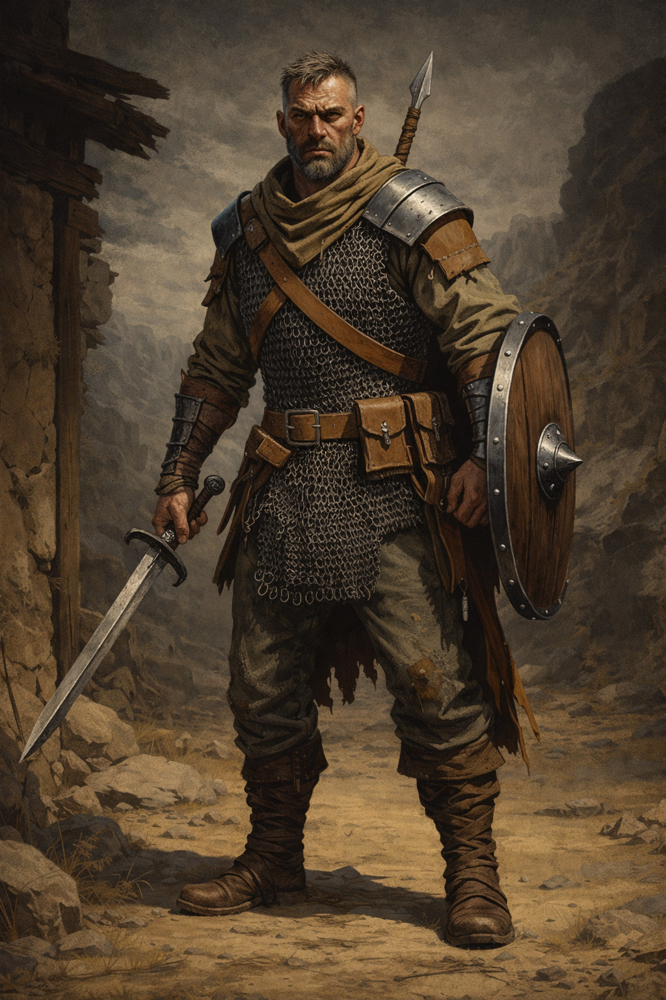

<div class="container">
            </img>
            <div class="content">
                <h1>Карточка персонажа — Олаф</h1>
                <div class="section">
                    <h2>Основная информация</h2>
                    <div class="section">
                        <p><strong>Класс:</strong><strong><a href="https://lakisfilippidis.github.io/dnd.images/Classes/fighter.html"> Боец (Fighter)</a></strong></p>
                        <p><strong>Предыстория:</strong> Наёмник (Mercenary Veteran)</p>
                        <p><strong>Мировоззрение:</strong> Упорядоченный нейтральный</p>
                        <p><strong>Раса:</strong> Человек</p>
                        <p><strong>Уровень:</strong> 3</p>
                        <p><strong>Опыт:</strong> 1950</p>
                    </div>

                    <div class="section">
                        <div class="section-title"><h2>Характеристики</h2></div>
                        <div class="stats-grid">
                            <div class="stat"><p><strong>Сила:</strong> 16 (+3)</div>
                            <div class="stat"><p><strong>Ловкость:</strong> 12 (+1)</div>
                            <div class="stat"><p><strong>Телосложение:</strong> 15 (+2)</div>
                            <div class="stat"><p><strong>Интеллект:</strong> 10 (+0)</div>
                            <div class="stat"><p><strong>Мудрость:</strong> 13 (+1)</div>
                            <div class="stat"><p><strong>Харизма:</strong> 11 (0)</div>
                            <br>
                            <div class="stat"><p><strong>Класс доспеха (КБ):</strong> 18 (Кольчужный доспех + Ловкость + Щит)</p></div>
                            <div class="stat"><p><strong>КЗ (HP):</strong> 27 (1-lvl-10, 2-lvl-7, 3-lvl-4, телосложение +6)</p></div>
                            <div class="stat"><p><strong>Инициатива:</strong> +1</p></div>
                            <div class="stat"><p><strong>Скорость:</strong> 30 фт</p></div>
                            <div class="stat"><p><strong>Спасброски:</strong> Сила, Телосложение</p></div>
                        </div>
                        <br>

                        <div class="section">
                            <div class="section-title"><h3>Оружие</h3></div>
                            <ul>
                                <li><p><strong>Одноручный меч:</strong> 1d8 режущий урон, +5 (сила +3, + владение +2)</p></li>
                                <li><p><strong>Метательное копье (2):</strong> 1d6 колющий урон, +4 (сила +3, владение +1), Дистанция: 20/60 футов</p></li>
                            </ul>
                        </div>

                        <div class="section">
                            <div class="section-title"><h3>Доп. снаряжение</h3></div>
                            <ul>
                                <li><p><strong>Набор путешественника</strong> (еда, вода, палатка, верёвка)</p></li>
                                <li><p><strong>Круглый щит</strong></p></li>
                                <li><p><strong>16 золотых монет</strong></p></li>
                            </ul>
                        </div>

                        <div class="section">
                            <div class="section-title"><h3>Доспехи</h3></div>
                            <ul>
                                <li><p><strong>Кольчужный доспех:</strong> +6 к КБ, средняя защита</p></li>
                            </ul>
                        </div>

                        <div class="section">
                            <div class="section-title"><h3>Навыки</h3></div>
                            <ul>
                                <li><p><strong>Выживание:</strong> +4</p></li>
                                <li><p><strong>Атлетика:</strong> +4</p></li>
                                <li><p><strong>История:</strong> +1</p></li>
                            </ul>
                        </div>

                        <div class="section">
                            <div class="section-title"><h3>Черты характера</h3></div>
                            <p><strong>Положительные:</strong> Опытный, уверенный в своих силах, стратегически мыслящий.</p>
                            <p><strong>Отрицательные:</strong> Бывший пьяница, склонный к одиночным действиям, трудно доверяет другим.</p>
                        </div>

                        <div class="section">
                            <h2>Особенности</h2>
                            <ul>
                                <li><p><strong><a href="https://lakisfilippidis.github.io/dnd.images/Classes/fighter.html#fighting-styles">Защита (Defense)</a></strong></p></li>
                                <li><p><strong><a href="https://lakisfilippidis.github.io/dnd.images/Classes/fighter.html#second-wind">Второе дыхание</a></strong></p></li>
                                <li><p><strong><a href="https://lakisfilippidis.github.io/dnd.images/Classes/fighter.html#action-surge">Экшен-сурж</strong></p></li>
                                <li><p><strong><a href="https://lakisfilippidis.github.io/dnd.images/Classes/fighter.html#archetypes">Гвардеец (Guardsman) 3 уровень</strong></p></li>
                            </ul>
                        </div>
                    </div>
                </div>